Das CRM Daten Cockpit, welches über den Menüpunkt…
1 CRM
1 CRM Daten Cockpit
… aufgerufen werden kann, bietet eine Zusammenstellung der verschiedensten Auswertungen, welche im WinLine LIST angelegt wurden.
Der Vorteil des CRM-Daten-Cockpits besteht darin, dass alle Auswertungen zusammengefasst dargestellt werden können, wobei zu jedem Datenbereich auch die jeweiligen Zusatzinformationen angezeigt werden können. Von diesem Informationsbereich aus kann auch "gearbeitet" werden, z.B. können neue Workflow- oder Aktionsschritte erfasst, Informationen abgefragt oder Daten in Merklisten / Kampagnen übernommen werden.
Hinweis
Über die Option "CRM-Datencockpit direkt nach dem Start der WinLine öffnen" (WinLine START - Parameter - Einstellungen) kann das CRM Daten Cockpit automatisch beim Start der WinLine geöffnet werden.
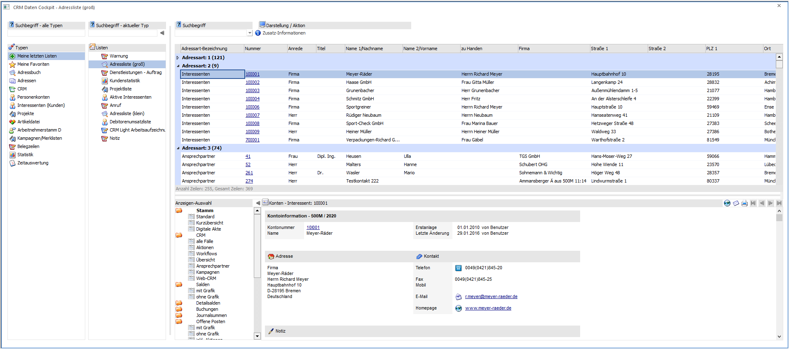
Das CRM Daten Cockpit ist in 4 Bereiche unterteilt:
ü 1 - Objekt-Typen
ü 2 - Listen-Auswahl
ü 3 - Anzeige-Bereich
ü 4 - Zusatz-Information
1 - Objekt-Typen
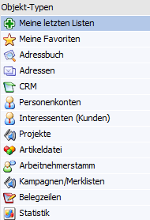
Im Bereich "Objekt-Typen" wird ausgewählt, welche Listen in der Listen-Auswahl zur Verfügung stehen sollen. Hierfür stehen folgende Typen zur Verfügung:
ü Meine letzten Listen
Es werden
die 11 zuletzt verwendeten Listen angezeigt.
ü Meine Favoriten
Es werden die
Favoritengruppen und -listen angezeigt.
Hinweis
Favoritengruppen können in diesem Objekt per rechte Maustaste angelegt werden. Die Zuweisung von Listen erfolgt per Drag & Drop.
ü Adressbuch
Es werden die
Gruppen und Listen des Typs "20 - Adressbuch" angezeigt.
ü Adressen
Es werden die Gruppen
und Listen des Typs "23 - Adressen" angezeigt.
ü CRM
Es werden die Gruppen und
Listen der Typen "16 - CRM Workflow", "17 - CRM Aktionen" und "18 - CRM Workflow
und Aktionen" angezeigt.
ü Personenkonten
Es werden die
Gruppen und Listen der Typen "01 - Debitorenstamm", "02 - Kreditorenstamm" und
"14 - Anfragelieferanten" angezeigt.
ü Interessenten (Kunden)
Es
werden die Gruppen und Listen des Typs "13 - Interessenten (Kunden)"
angezeigt.
ü Projekte
Es werden die Gruppen
und Listen des Typs "21 - Projekte" angezeigt.
ü Artikeldatei
Es werden die
Gruppen und Listen des Typs "04 - Artikeldatei" angezeigt.
ü Arbeitnehmerstamm
Es werden
die Gruppen und Listen des Typs "09 - Arbeitnehmerstamm" angezeigt.
ü Kampagnen/Merklisten
Es werden
die Gruppen und Listen des Typs "22 - Kampagnen/Merklisten" angezeigt.
ü Belegzeilen
Es werden die
Gruppen und Listen des Typs "19 - Belegzeilen" angezeigt.
ü Statistik
Es werden die Gruppen
und Listen des Typs "06 - Statistik" angezeigt.
ü Zeitauswertung
Es werden die
Gruppen und Listen des Typs "27 - Zeitauswertung" angezeigt.
ü Belege
Es werden die Gruppen
und Listen des Typs "28 - Belege" angezeigt.
Hinweis
Die Suche nach Listen kann oberhalb der Objekt-Typen über das Eingabefeld "Suchbegriff - alle Typen" typenübergreifend erfolgen. Suchergebnisse werden im Bereich der Listen-Auswahl präsentiert.
2 - Listen-Auswahl
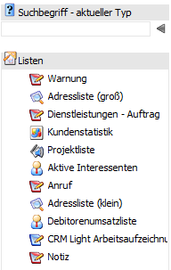
Je nach ausgewähltem Objekt-Typ werden in diesem Bereich die entsprechenden Gruppen und Listen dargestellt.
Die Auswahl einer Liste erfolgt per Doppelklick, Enter, dem Button "Aktualisieren" oder über die rechte Maustaste (Funktion "Ansicht aktualisieren").
Ø rechte Maustaste
Über die rechte Maustaste stehen, je nach Objekt-Typ und aktuellem Fokus, folgende Funktionen zur Verfügung:
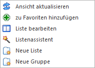
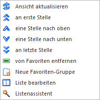
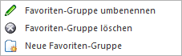
ü Ansicht aktualisieren
Die
Ansicht für die gewählte Liste wird aktualisiert.
ü zu Favoriten hinzufügen
Die
markierte Liste wird dem Bereich "Meine Favoriten" hinzugefügt.
ü Liste bearbeiten
Die markierte
Liste wird im WinLine LIST zur Bearbeitung geöffnet.
ü Listenassistent
Es wird der
Assistent im WinLine LIST geöffnet.
ü Neue Liste
Es wird in die
Neuanlage einer Liste im WinLine LIST gewechselt.
ü an erste Stelle / eine Stelle nach
oben / eine Stelle nach unten / an letzte Stelle
Im Bereich "Meine Favoriten"
wird die Reihenfolge von Listen geändert.
Hinweis
Die Reihenfolge von Favoriten-Gruppen wird per Drag & Drop geändert.
ü von Favoriten entfernen
Die
markierte Liste wird aus dem Bereich "Meine Favoriten" entfernt.
ü Neue Favoriten-Gruppe
Im
Bereich "Meine Favoriten" können Favoriten-Gruppen erstellt werden.
Hinweis
Die Zuweisung von Favoritenlisten erfolgt per Drag & Drop.
ü Favoriten-Gruppe umbenennen
Es
kann der Name von angelegten Favoriten-Gruppen geändert werden.
ü Favoriten-Gruppe löschen
Die
markierte Favoriten-Gruppe wird entfernt.
Ø Zu- / Aufklappen
Mit Hilfe dieser Buttons können die Bereiche "Objekt-Auswahl" und "Listen-Auswahl" zu- bzw. aufgeklappt werden.
Ø Suchbegriff - aktueller Typ
Durch Eingabe eines Suchbegriffs kann an dieser Stelle (per Volltextsuche) nach Listen des aktuellen Objekt-Typs gesucht werden.
3 - Anzeige-Bereich
In diesem Bereich wird die ausgewählte Liste angezeigt, wobei zwischen folgenden Ansichten unterschieden wird:
ü Tabelle
ü Kalender
ü Formular
ü Grafik
Standardmäßig wird jede Liste zunächst in der Ansicht "Tabelle" dargestellt, außer es handelt sich um eine Kalender-Liste (Option "Standardausgabe auf" wurde auf "3 - Ausgabe Kalender" definiert). Über Buttons im Ribbon kann die Ansicht jederzeit beliebig gewechselt werden.
Tabellenansicht
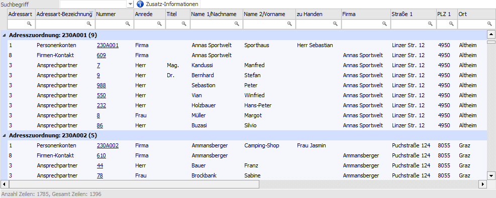
In der Tabellenansicht (Button "Tabelle") werden alle Daten der Liste in Form einer Tabelle dargestellt. Durch diese Art der Darstellungsform können zusätzliche Funktionen zur Verfügung gestellt werden.
Ø Suchbegriff
Im Feld "Suchbegriff" kann ein Begriff eingegeben werden, nach dem gesucht werden soll. Die Suche erfolgt hierbei in alle Spalten und in Form einer Volltextsuche.
Durch das Bestätigen des Begriffs wird die Suche gestartet und in Tabelle nur noch jene Zeilen angezeigt, welche den Suchbegriff beinhalten.
Hinweis
Durch Aktualisierung der Liste oder entfernen des Suchbegriff wird wieder der gesamte Inhalt angezeigt.
Ø Zusatz-Information
Es wird der Bereich "Zusatz-Information" unterhalb der Tabelle dargestellt (nähere Informationen entnehmen Sie bitte der Beschreibung von "4 - Zusatz-Information")
Ø Suchzeile
Standardmäßig wird - wenn die Liste erstellt wurde - eine Suchzeile eingeblendet. In dieser Suchzeile kann durch Eingabe eines Begriffs in jeder Spalte schnell und zielgenau gesucht werden,
Beispiel
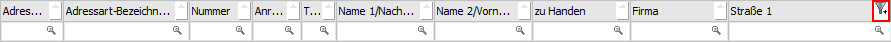
Eine Suche (Filterung) kann dabei jederzeit über das entfernen des Suchbegriffs oder durch Anwahl des Symbols rückgängig gemacht werden.
Hinweis
Wenn der Inhalt einer Spalte wiederkehrend ist, dann wird zur einfacheren Suche eine Auswahlbox angeboten.
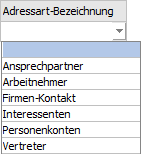
Ø Weitere Spaltenfunktionen
Innerhalb der Spalten können die speziellen Spaltenfunktionen über ein Pfeilsymbol aktiviert werden, wobei das Symbol angezeigt wird, wenn der Mauszeiger auf eine Spaltenüberschrift geführt wird. Bei Anwahl des Pfeilsymbols mit der linken Maustaste stehen folgende Möglichkeiten zur Verfügung:
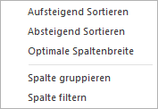
Ø Spalte sortieren
Über die Buttons "Aufsteigend Sortieren" bzw. "Absteigend Sortieren" kann der Inhalt der Spalte sortiert werden.
ü
Der Inhalt der Spalte wird aufsteigend sortiert.
ü
Der Inhalt der Spalte wird absteigend sortiert.
Hinweis 1
Sollte bereits in der Spalte sortiert werden, dann wird auf die Art Sortierung durch ein - bzw. -Symbol hingewiesen.
Hinweis 2
Die Sortierung wird auch durchgeführt, wenn direkt auf die Überschrift geklickt wird (d.h. nicht auf das Pfeilsymbol), Dabei erfolgt zunächst eine aufsteigende Sortierung und bei nochmaliger Anwahl der Überschrift eine absteigende Sortierung.
Ø Optimale Spaltenbreite
Über den Button "Optimale Spaltenbreite" wird automatisch die Spalte auf die optimale Größe eingestellt, so dass innerhalb der Spalte bei jeden Datensatz die entsprechenden Informationen komplett angezeigt werden können.
Ø Spalte gruppieren
Über den Button "Spalte gruppieren" wird innerhalb der Tabelle nach dem Inhalt der Spalte gruppiert. D.h. es wird eine neue Zeile in der Tabelle eingefügt, wobei die Spaltenbezeichnung und der dazugehörige Wert als Überschrift angezeigt werden. Daneben wird die Anzahl der Datensätze innerhalb der Gruppe angezeigt (in Klammer). Unterhalb der Überschrift werden dann die einzelnen Datensätze dargestellt.
Hinweis
Gruppierungen können auf bis zu 5 Ebenen durchgeführt werden.
Beispiel
Es wird in einer Debitorenliste nach der vorhandenen Spalte "Kundengruppe" gruppiert.
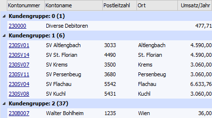
Hinweis
Links neben der Gruppenüberschrift wird ein Pfeil angezeigt, mit welchem die einzelnen Gruppen geschlossen werden können, d.h. es wird nach Anwahl nur mehr die Überschrift angezeigt, die einzelnen Datensätze selbst werden ausgeblendet.
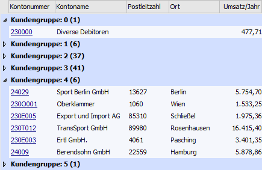
Über die rechte Maustaste auf einer Gruppierungsüberschrift können alle Gruppierung geschlossen oder geöffnet werden.
ü
Es werden alle vorhandenen Gruppierungen
geschlossen.
ü
Es werden alle vorhandenen Gruppierungen
geöffnet.
Um eine Gruppierung wieder aufzuheben wird auf die entsprechende Gruppierungsüberschrift mit der rechten Maustaste gedrückt und der Button "Gruppierung aufheben" ausgewählt.
ü
Es wird die aktuelle Gruppierung und alle
darunterliegenden Gruppierungen aufgehoben.
Ø Spalte filtern
Über den Button "Spalte filtern" kann innerhalb der Spalte nach selbst zu definierenden Datenbereichen gefiltert werden. Hierzu wird der Programmbereich "Spaltenfilter" geöffnet (nähere Informationen siehe Kapitel "Spaltenfilter").
Wenn eine Filterung in einer Spalte vorhanden ist wird durch das Symbol auf dieses hingewiesen.
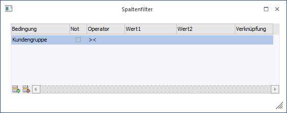
Hinweis
Bei Spalten mit einem Datumsinhalt wird zusätzlich ein Untermenü mit folgenden Einträgen angeboten:
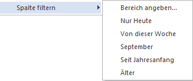
ü Bereich angeben
Es wird der
Spaltenfilter geöffnet.
ü Nur Heute
Es werden nur
Datensätze mit dem aktuellen Tagesdatum angezeigt.
ü Von dieser Woche
Es werden nur
Datensätze der aktuellen Woche angezeigt.
ü Aktueller Monat (hier
"September")
Es werden nur Datensätze des aktuellen Monats angezeigt.
ü Seit Jahresanfang
Es werden nur
Datensätze des aktuellen Jahres angezeigt.
ü Älter
Es werden nur Datensätze
angezeigt, welche vor dem aktuellen Jahr liegen.
Um eine Filterung wieder zu entfernen wird auf das Filtersymbol der Spalte gedrückt oder mit Hilfe der rechten Maustaste der Button "Spaltenfilter entfernen" angewählt.
ü
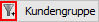
ü
Tabellenbuttons
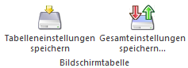
Ø Tabelleneinstellungen speichern
Die Spalten einer Tabelle können grundsätzlich an beliebige Positionen verschoben, bzw. in der Breite entsprechend angepasst werden. Durch Anwahl des Buttons "Tabelleneinstellungen speichern" werden die Einstellungen benutzerspezifisch gespeichert und bei dem nächsten Aufruf des Programmpunktes wieder vorgeschlagen.
Ø Gesamteinstellungen speichern
Im Gegensatz zu "Tabelleneinstellungen speichern" können mit "Gesamteinstellungen speichern" mehrere Tabellenaufbauten gespeichert und nach Wunsch geladen werden. Zusätzlich werden Sonderfunktionen der Tabelle (z.B. "Spalte gruppieren") ebenfalls bei der Speicherung bedacht.
Formularansicht
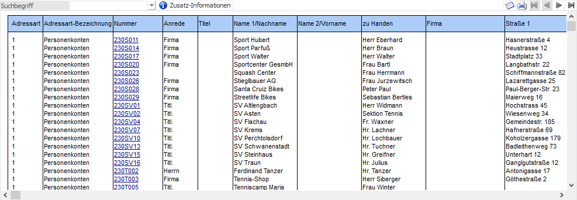
In der Formularansicht (Button "Formular") werden alle Daten der Liste in Form einer Liste dargestellt.
Ø Suchbegriff
Im Feld "Suchbegriff" kann ein Begriff eingegeben werden, nach dem gesucht werden soll. Wenn der Suchbegriff bestätigt wird, erfolgt in dem Formular die Suche nach diesem Begriff, wobei es sich dabei um eine Volltextsuche handelt. Die gefundenen Einträge werden in der Folge in der Liste markiert, und mit der F3-Taste kann die Suche innerhalb der Seite fortgeführt werden.
Ø Zusatz-Information
Es wird der Bereich "Zusatz-Information" unterhalb der Tabelle dargestellt (nähere Informationen entnehmen Sie bitte der Beschreibung von "4 - Zusatz-Information")
Ø Mail
Durch Anklicken des Mail-Buttons kann die Liste per Mail versendet werden, wobei das Dokument in dem Format erstellt wird, welches in den Einstellungen (WinLine Start - Parameter - Einstellungen - Register "Mail") hinterlegt wurde.
Ø Drucken
Durch Anwahl dieses Buttons kann die Liste gedruckt werden.
Ø VCR-Buttons
Sofern die Auswertung mehrere Seiten umfasst, kann mit den VCR-Buttons geblättert werden.
Kalenderansicht
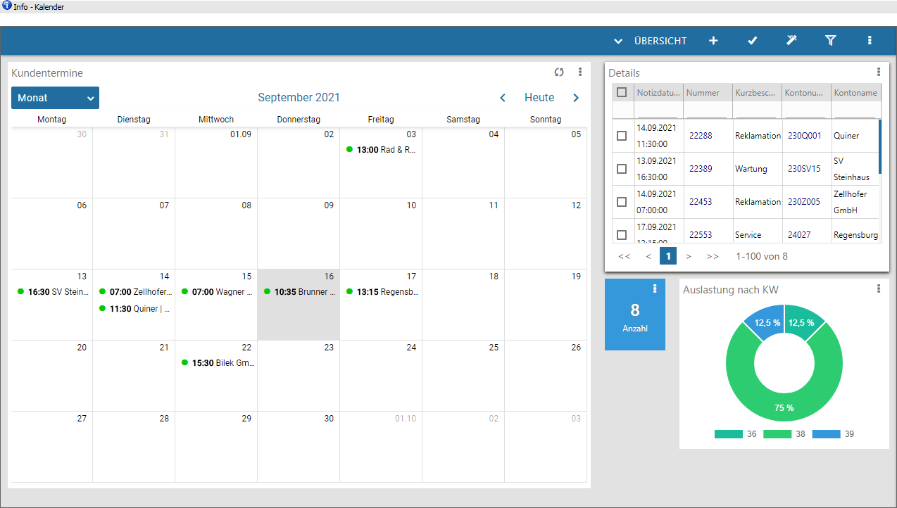
In der Kalenderansicht (Button "Kalender") werden alle Daten der Liste in Form eines Kalenders dargestellt. Dabei stehen alle Standardfunktionen eines CRM- bzw. Belegzeilenkalenders zur Verfügung, d.h.
ü Drag & Drop von Terminen
ü Neuanlage von Workflows und Aktionen (CRM-Kalender)
ü Öffnen der CRM-Fallansicht (CRM-Kalender)
ü Bearbeiten der Kalendereinträge (CRM-Kalender)
ü Wechsel ins Belegmanagement (Belegzeilenkalender)
Hinweis
Ob eine Liste als Kalender dargestellt werden kann hängt von mehreren Faktoren ab, z.B. den Typ der WinLine LIST-Liste. Nähere Informationen hierzu und zur Steuerung des Kalenders entnemen Sie bitte dem Kapitel "WinLine Kalender".
Grafikansicht
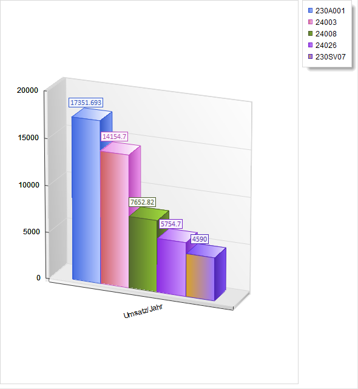
In der Grafikansicht (Button "Grafik") werden die Daten der Liste in Form einer Grafik dargestellt.
Hinweis
Damit eine Liste in Form einer Grafik dargestellt werden kann, muss diese im WinLine LIST entsprechend aufgebaut werden.
Ø Rechte Maustaste
Über die rechte Maustaste kann die Grafik angepasst werden.
4 - Zusatz-Information
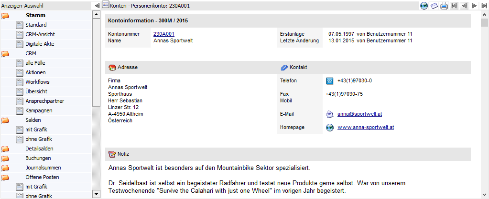
Wenn der Button "Zusatz-Information" gedrückt wurde (siehe "Tabellenansicht" bzw. "Formularansicht") dann wird der Bereich "Zusatz-Information" geöffnet. In diesem werden Detailinformationen zum aktuell gewählten Datensatz (z.B. Kontonummer, Artikelnummer, CRM-Fall-Nummer, etc.) angezeigt.
ü Tabellenansicht
In der Tabelle
werden alle Datensätze mit einer Detailinformation unterstrichen dargestellt.
Diese Unterstreichungen werden von WinLine automatisch gebildet.
Hinweis
Erfolgt in der Tabelle einer CRM-Liste eine Mehrfachselektion, so wird eine Anzeige der "Zusatz-Information" automatisch deaktivert. D.h. der Button wird als "nicht gedrückt" dargestellt.
ü Formularansicht
In dem Formular
werden alle Datensätze mit einer Detailinformation unterstrichen dargestellt.
Diese Unterstreichungen werden von WinLine automatisch gebildet, können aber
auch über eine sogenannte Formularanpassung selber generiert werden.
Ø Anzeigen-Auswahl
Bei der Anwahl von "Personenkonten", "Artikeln", "Arbeitnehmern" oder "Projekten" wird neben der Zusatz-Information die Anzeigen-Auswahl geöffnet und mit unterschiedlichen Anzeigevarianten gefüllt. Durch Auswahl solch einer Variante wird die Zusatzinformation dementsprechend gefüllt.
Hinweis
Der Inhalt der "Anzeigen-Auswahl" stammt aus den WinLine INFO-Informationsmodule. Die im CRM Daten Cockpit zuerst dargestellte Anzeige (Fettschrift) ist immer gleichlautend mit der "Standardansicht" aus der WinLine INFO, kann aber auch an dieser Stelle per rechte Maustaste angepasst werden.
Ø Zu- / Aufklappen
Mit Hilfe dieser Buttons kann der Bereiche "Anzeigen-Auswahl" zu- bzw. aufgeklappt werden.
Ø Adresse in der Map anzeigen
Wenn dieser Button angeklickt wird, wird - sofern eine Internetverbindung vorhanden ist - eine Internetseite geöffnet, in welcher der Standort der gewählten Adresse angezeigt wird.
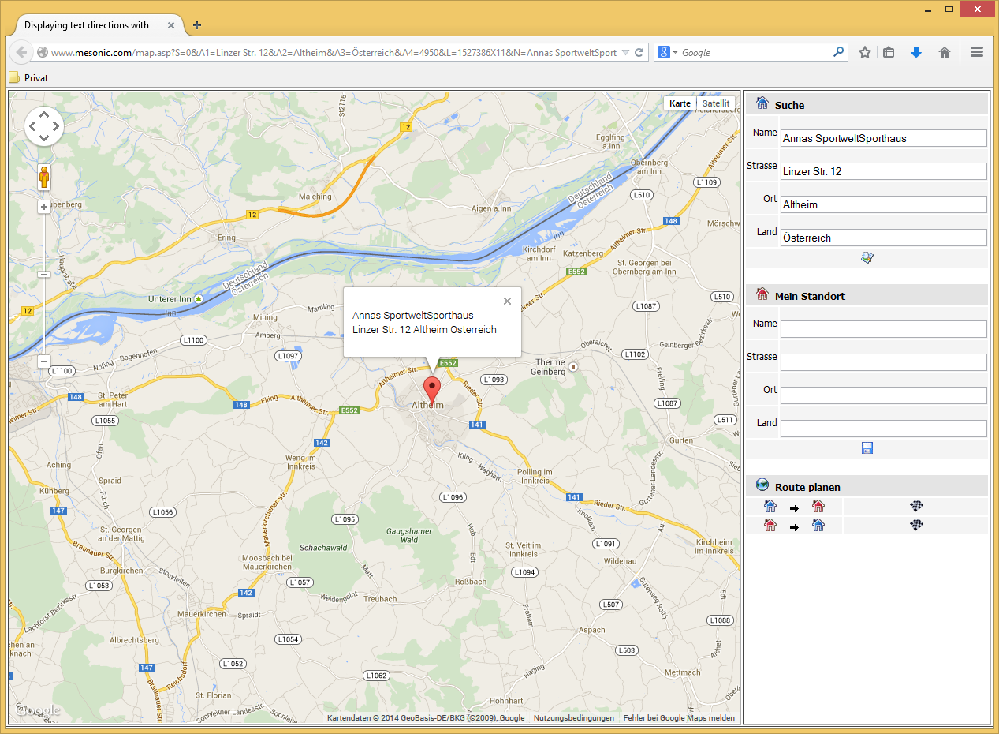
Hinweis
Wenn im Bereich "Mein Standort" die eigene Adresse eingegeben wird, dann kann auch die Route zum Ziel ermittelt und angezeigt werden. Die Speicherung des eigenen Standorts per Cookie ist auch möglich.
Ø Mail
Durch Anklicken des Mail-Buttons kann die Zusatz-Information per Mail versendet werden, wobei das Dokument in dem Format erstellt wird, welches in den Einstellungen (WinLine Start - Parameter - Einstellungen - Register "Mail") hinterlegt wurde.
Ø Drucken
Durch Anwahl dieses Buttons kann die Zusatz-Information gedruckt werden.
Ø VCR-Buttons
Sofern die Detailinfo mehrere Seiten umfasst, kann mit den VCR-Buttons geblättert werden.
Buttons
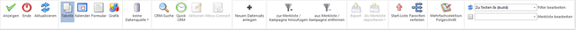
Ø Anzeigen
Durch Anklicken des Buttons "Anzeigen bzw. der Taste F5 wird die gerade aktive Liste (neu) geladen und angezeigt. Dabei wird auch ein ggf. hinterlegter Filter ausgeführt.
Ø Ende
Durch Drücken des Buttons "Ende" bzw. der ESC-Taste wird das CRM Daten Cockpit geschlossen.
Ø Aktualisieren
Der Button "Aktualisieren" kann durch Anwahl aktiviert bzw. deaktiviert und dient zum automatischen Aktualisieren von CRM-Listen. Diese Aktualisierung findet statt, wenn ein neuer CRM-Fall erfasst oder ein bestehender Fall weitergeführt wird.
Ø Tabelle
Die aktive Liste wird in Form einer Tabelle dargestellt.
Mehrfachselektion Folgeschritt
Handelt es sich bei den Daten der Tabelle um CRM-Fälle (Listentyp "16 - CRM Workflow" bzw. "18 - CRM Workflow und Aktionen"), so steht die Funktion "CRM Folgeschritte" zur Verfügung. Damit ist es möglich, mehrere CRM-Fälle der Tabelle zu markieren und mit Hilfe der Spalte "Folgeschritte" für all jene Fälle gleichzeitig einen Folgeschritt auszuführen.
Die "Selektion" mehrerer Zeilen in der Tabelle kann durch Drücken der STRG-Taste bzw. der SHIFT-Taste erfolgen. In der Multiplatform WinLine kann die Selektion auch durch Aktivieren der Checkboxen in der Zeile erreicht werden.
Das Auführen des Folgeschrittes erfolgt durch Anwählen des Symbols in der eigenen Tabellenspalte "Folgeschritte":
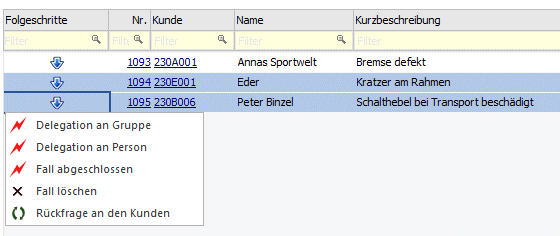
ü Folgeschritte
Bei der Anzeige
der möglichen Folgeschritte zu den selektierten CRM-Fällen (welche grundsätzlich
nicht den gleichen Schrittstatus - gleiche Workflowschritt-Nummer - haben
müssen) wird der "Durchschnitt" aller Folgeschritte zu den einzelnen Fällen
herangezogen. Dabei werden maximal 10 Folgeschritte angezeigt. Gibt es keine
gemeinsamen Folgeschritte, so wird dies mit einer entsprechenden Meldung
dargestellt
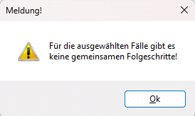

ü Workflow-Vorlagen
In den
Workflow-Vorlagen kann bei den entsprechenden Folgenschritten eingestellt sein,
dass das Fenster "immer geöffnet" wird - siehe Beispiel:
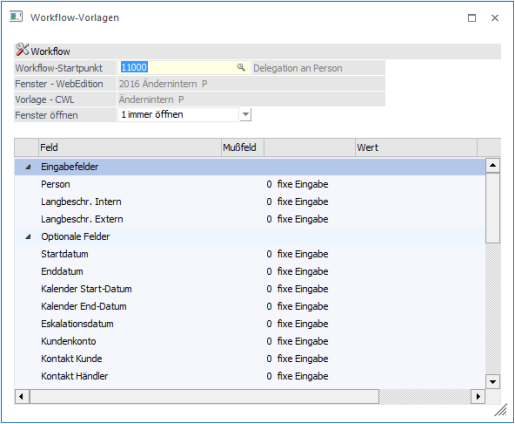
Wird nun die Funktion "CRM-Folgeschritte" aufgerufen, werden dort die gemeinsamen Folgeschritte angezeigt. Mit dem Auswählen des Folgeschrittes wird dieser für alle ausgewählten Zeilen durchgeführt.
Ø Kalender
Die aktive Liste wird in Form eines Kalenders dargestellt.
Ø Formular
Die aktive Liste wird in Form eines Formulars (einer Bildschirmausgabe) dargestellt.
Ø Grafik
Die aktive Liste wird in Form einer Grafik dargestellt.
Ø Datenquelle
Mit Hilfe dieser Auswahl kann definiert werden, ob und wie eine Datenquelle (d.h. ein Snapshot von Daten) genutzt werden soll. Der Auswahlbutton steht nur zur Verfügung, wenn WinLine BI BUSINESS oder WinLine BI CORPORATE lizensiert wurde.
ü Keine Datenquelle
Die Daten
werden zur Laufzeit ermittelt, d.h. die für die Ausgabe erforderlichen Daten
werden direkt aus der produktiven WinLine-Datenbank geholt und in der
gewünschten Variante ausgegeben.
ü Datenquelle
erstellen/aktualisieren
Die Daten werden zur Laufzeit ermittelt und an eine
zu definierende Datenquelle übergeben. Nach dem Befüllen der Datenquelle wird
die gewünschte Ausgabevariante über die Datenquelle generiert. Dieser Vorgang
könnte mit einer Zeitverzögerung verbunden sein, da die Daten zusätzlich
abgespeichert werden müssen.
ü Datenquelle verwenden
Die Daten
werden direkt aus einer auszuwählenden Datenquelle gelesen, d.h. die für die
Ausgabe erforderlichen Daten können ohne Verzögerung in der gewünschten
Varianten ausgegeben werden.
Hinweis
Der Button "Datenquelle verwenden" steht nur zur Verfügung, wenn es zumindest eine private oder öffentliche Datenquelle für diesen Bereich (bezogen auf den aktuellen Benutzer) gibt.
Ø CRM-Suche
Durch Anwahl des Buttons "CRM-Suche" wird die CRM-Suche geöffnet.
Ø Quick CRM
Wenn dieser Button angeklickt wird, kann ein CRM-Fall zu dem aktiven Datensatz erfasst werden. Voraussetzung dafür ist:
ü Es muss eine gültige CRM-Lizenz vorhanden sein.
ü Der Benutzer muss ein CRM-Benutzer sein.
ü Es müssen entsprechende CRM-Aktionen bzw. CRM-Workflows mit der Kennzeichnung "QUICK CRM" angelegt sein.
Hinweis
Es werden im WinLine Standard 9 CRM-Aktionen (CRM-Gruppe "100") mitgeliefert.
Ø Aktionen
Durch Anklicken des Buttons "Aktionen" wird ein Kontextmenü geöffnet, in dem verschiedene Aktionen zur Verfügung stehen, die für die selektierten Einträge ausgeführt werden können.
Hinweis 1
Der Button "Aktionen" steht nur in der Tabellenansicht zur Verfügung.
Hinweis 2
Im Programm "Aktionen" (WinLine START - Parameter - Aktionen) können zu den jeweiligen Aktionen auch CRM-Aktionen bzw. CRM-Startpunkte definiert werden.
Die standardmäßig zur Verfügung stehenden Aktionen haben folgende Funktionen:
ü eMail senden
Wenn beim Datensatz eine
E-Mail-Adresse hinterlegt ist, öffnet sich das Postausgangsbuch zum Erstellen
und Versenden von E-Mails.
ü Brief schreiben
Es wird das
Postausgangsbuch geöffnet, in dem ein Serienbrief ausgegeben werden kann.
ü  Fax
Fax
Es wird das Postausgangsbuch
geöffnet, in dem ein Serienfax ausgegeben werden kann.
ü Ausgabe Drucker
Bei Auswahl dieser
Aktion wird eine "Merkliste" auf den Drucker ausgegeben, welche die wichtigsten
Daten der selektierten Datensätze enthält.
ü Ausgabe Excel
Es wird eine Tabelle in
einem eigenen Fenster erzeugt, welche mit der rechten Maustaste (Option
"Exportiere Tabelle…") auch als XLS-Datei abgespeichert werden kann.
ü Telefon 1 anrufen
Wird diese Aktion
gewählt und ist beim entsprechenden Datensatz auch eine Telefonnummer
eingetragen, wird - sofern die entsprechenden Voraussetzungen vorhanden sind -
die Telefonnummer 1 gewählt.
ü Telefon 2 anrufen
Wird diese Aktion
gewählt und ist beim entsprechenden Datensatz auch eine Telefonnummer
eingetragen, wird - sofern die entsprechenden Voraussetzungen vorhanden sind -
die Telefonnummer 2 gewählt.
ü Mobiltelefon anrufen
Wird diese Aktion
gewählt und ist beim entsprechenden Datensatz auch eine Telefonnummer
eingetragen, wird - sofern die entsprechenden Voraussetzungen vorhanden sind -
die Mobiltelefonnummer gewählt.
ü  WWW Adresse aufrufen
WWW Adresse aufrufen
Wenn beim Datensatz
eine Internet-Adresse hinterlegt ist, wird der installierte Browser geöffnet und
automatisch die im Datensatz hinterlegte Adresse angesurft.
ü Stammdaten aufrufen
Der in der Tabelle
markierte Datensatz wird im entsprechendem Stammdatenfenster (abhängig davon,
welcher Datensatztyp gerade geöffnet ist) aufgerufen und kann dort bearbeitet
werden.
ü Etiketten drucken
Für alle Datensätze,
die in der Tabelle markiert sind, werden Etiketten ausgedruckt, wobei die
Ausgabe zuerst am Bildschirm vorgenommen wird. Von dort aus können die Etiketten
durch Anklicken des Drucker-Buttons auf den Drucker ausgegeben werden. Für den
Ausdruck der Etiketten wird das Formular "P99W432E" verwendet.
ü Info aufrufen
Wenn es sich bei dem
Datensatz in der Tabelle um ein Personenkonto (Debitor/Kreditor/Interessent)
oder um einen Ansprechpartner eines Personenkontos handelt, dann wird das Konto
in der Konteninformation (WinLine INFO) geöffnet.
Ø Meso-Connect
Durch Anklicken des Buttons "Meso-Connect" wird ein Kontextmenü geöffnet, in dem standardmäßig folgende "Meso-Connect"-Aktionen zur Verfügung stehen:
Hinweis
Der Button "MESO-Connect" steht nur in der Tabellenansicht zur Verfügung.
ü  Mail
Mail
An die selektierten Datensätze kann
mit dieser Aktion eine Mail geschickt werden. Es öffnet sich dazu das
Meso-Connect-Mail Fenster indem die Betreffzeile des Mails sowie ein Text
angegeben werden kann. Weiter besteht noch die Möglichkeit, ein Attachement
anzuhängen. Voraussetzung ist, dass bei den gewählten Datensätzen auch eine
e-Mail-Adresse vorhanden ist.
ü Kontakte
Mit dieser Aktion kann ein
Abgleich mit den Microsoft Outlook-Kontakten durchgeführt werden, wobei es 4
unterschiedliche Szenarien geben kann:
ü 1. Der Datensatz ist in Outlook noch nicht vorhanden. In diesem Fall wird der Kontakt neu angelegt.
ü 2. Der Datensatz ist in Outlook bereits vorhanden, in der WinLine wurde eine Änderung durchgeführt. In diesem Fall werden die veränderten Daten an Outlook übergeben.
ü 3. Der Datensatz ist in Outlook bereits vorhanden und wurde dort auch verändert. In diesem Fall werden die veränderten Daten in die WinLine übernommen.
ü 4. Der Datensatz ist in Outlook und in der WinLine bereits vorhanden und wurde auch in beiden bereits verändert. In diesem Fall erfolgt eine Frage, welche der Daten aktualisiert werden sollen.
ü Excel
Damit wird das Programm Microsoft
Excel gestartet und der bzw. die selektierten Datensätze werden mit den
Spaltenüberschriften übergeben.
ü Word-Fax
Hier wird eine Word-Fax-Vorlage
aufgerufen, wobei entschieden werden kann, ob für jeden selektierten Datensatz
ein eigenes Fax oder alle Datensätze auf einer Fax-Vorlage eingefügt werden.
ü  Word-Tabelle
Word-Tabelle
Bei dieser Aktion wird
Microsoft Word gestartete und die selektierten Datensätze werden in einer
Tabelle dargestellt.
ü  StarCalc
StarCalc
Sofern das Programm StarCalc
installiert ist, können die Daten in dieses Programm übergeben werden.
ü StarWrite
Sofern das Programm StarWrite
installiert ist, können die Daten in dieses Programm übergeben werden.
ü Wizard
Über diesen Eintrag kann der
MESO-Connect Wizard aufgerufen werden, mit dem neue Aktionen erstellt bzw.
bestehende Aktionen verändert werden können.
Ø Neuen Datensatz anlegen
Bei Anwahl dieses Buttons öffnet sich das Fenster "CRM Daten Cockpit - Neuer Datensatz", über welches neue Stammdaten bzw. CRM-Fälle angelegt werden können (nähere Informationen siehe Kapitel "CRM Daten Cockpit - Neuer Datensatz").
Ø zur Merkliste / Kampagne hinzufügen
Durch Anklicken dieses Buttons können die Daten der Liste bzw. der markierte Bereich der Tabelle zu einer Merkliste / einer Kampagne hinzugefügt werden.
Ø aus Merkliste / Kampagne entfernen
Durch Anklicken dieses Buttons können die Daten der Liste bzw. der markierte Bereich der Tabelle aus einer Merkliste / einer Kampagne entfernt werden.
Ø Export
Bei Anwahl dieses Buttons wird der markierte Bereich der Tabelle nach Excel exportiert, wobei alle Spalten (samt Überschriften) übergeben werden. In weiterer Folge können diese Dateien über den Import-Button bzw. dem WinLine-Excel-Add-In wieder importiert werden.
Hinweis
Der ODBC-Treiber, welcher für den Export genutzt wird, kann in den Vorlagen-Parametern (WinLine START - Vorlagen - Vorlagen-Parameter - Register "Optionen" - Option "Standard-Excel-Treiber") definiert werden.
Desweiteren wird bei dem Export in der Excel-Datei ein sogenannter "Namensbereich" gebildet, welcher den Arbeitsbereich definiert. D.h. wenn Datensätze ergänzt werden sollen, dann muss auch der Namensbereich angepasst werden.
Achtung
Für den Export wird eine WinLine EXIM-Lizenz benötigt. Wenn diese nicht vorliegt können maximal 10 Datensätze exportiert werden. Des Weiteren steht diese Funktion in der Enterprise Connect nicht zur Verfügung.
Ø Import
Eine zuvor exportierte Excel-Datei (Button "Export") kann über diesen Button wieder importiert werden. Hierbei stehen folgende Varianten zur Verfügung:
ü In Stammdaten importieren
Nach
der Auswahl der Excel-Datei erfolgt der Import. Hierbei werden die Datensätze
mit den Stammdaten abgeglichen, wodurch Stammdaten geändert oder neue Stammdaten
erzeugt werden.
ü Als Merkliste importieren
Nach
der Auswahl der Excel-Datei erfolgt der Import. Hierbei wird das Fernster
"Kampagne verändern" geöffnet und die Datensätze als Merkliste importiert.
ü In Stammdaten und als Merkliste
importieren
Nach der Auswahl der Excel-Datei erfolgt der Import. Hierbei
werden die Datensätze mit den Stammdaten abgeglichen, wodurch Stammdaten
geändert oder neue Stammdaten erzeugt werden. Im Anschluss daran öffnet sich das
Fenster "Kampagne verändern" und die Datensätze werden zusätzlich als Merkliste
importiert.
Hinweis
Bei allen Importen werden die Daten auf Korrektheit geprüft und ggfs. der Import nicht durchgeführt. Das EXIM-Protokoll, welches nach dem Import erzeugt wird, gibt hierüber und über alle positiven Importe Auskunft.
Achtung
Für den Import wird eine WinLine EXIM-Lizenz benötigt. Wenn diese nicht vorliegt können maximal 10 Datensätze importiert werden. Des Weiteren steht diese Funktion in der Enterprise Connect nicht zur Verfügung.
Ø Start-Liste
Durch Anwahl dieses Buttons wird die aktive Liste als "Start-Liste" definiert. D.h. beim Start des CRM Daten Cockpits wird dieses diese automatisch geladen.
Ø Favoriten verteilen
Bei dem Drücken des Buttons öffnet sich das Fenster "Verteilen auf Benutzer / Mandant", durch welches alle Favoritengruppen und -listen einem anderen Benutzer zur Verfügung gestellt werden kann.
Ø Filter bearbeiten
Über den Filter-Bearbeiten-Button kann ein bestehender Filter bearbeitet oder ein neuer Filter angelegt werden. Neben dem Button stehen in einer Auswahlbox alle definierten Filter zur Auswahl.
Ø Merkliste bearbeiten
Über den Button "Merkliste bearbeiten" kann eine bestehende Merkliste bearbeitet oder eine neue Merkliste angelegt werden. Neben dem Button stehen in einer Auswahlbox alle definierten Merklisten zur Auswahl.